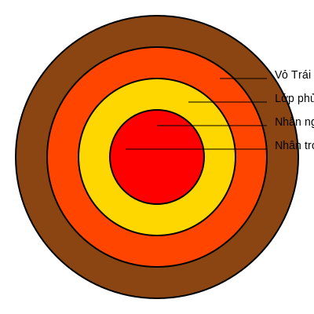
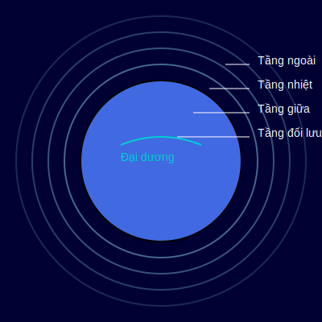

Trái Đất - Hành tinh của sự sống
Tổng quan
Trái Đất là hành tinh thứ ba tính từ Mặt Trời trong Hệ Mặt Trời, đồng thời là hành tinh lớn nhất trong các hành tinh đất đá. Đây là nơi duy nhất trong vũ trụ được biết đến có sự sống tồn tại. Trái Đất được hình thành cách đây khoảng 4,54 tỷ năm.
Cấu tạo
Trái Đất có cấu tạo gồm bốn lớp chính:
- Lớp vỏ Trái Đất: Lớp ngoài cùng, dày từ 5-70km, nơi chúng ta sinh sống
- Lớp phủ (Mantle): Chiếm khoảng 84% thể tích Trái Đất, nhiệt độ từ 1000°C đến 3700°C
- Lớp nhân ngoài: Ở trạng thái lỏng, chủ yếu là sắt và niken, tạo ra từ trường bảo vệ Trái Đất
- Lớp nhân trong: Ở trạng thái rắn, nhiệt độ cao khoảng 5.400°C, áp suất cực lớn
Khí quyển và Thủy quyển
Khí quyển Trái Đất chủ yếu gồm nitrogen (78%), oxygen (21%) và các khí khác (1%). Khí quyển được chia thành nhiều tầng với đặc điểm khác nhau:
- Tầng đối lưu: Nơi diễn ra các hiện tượng thời tiết, cao đến 10-15km
- Tầng bình lưu: Chứa tầng ozone bảo vệ Trái Đất khỏi tia cực tím
- Tầng trung lưu: Nhiệt độ giảm theo độ cao, nơi thiên thạch cháy
- Tầng nhiệt: Nhiệt độ tăng mạnh theo độ cao, có thể đạt 1.500°C
Đại dương chiếm khoảng 71% bề mặt Trái Đất, chứa 97% lượng nước trên hành tinh. Đại dương đóng vai trò quan trọng trong việc điều hòa khí hậu và duy trì sự sống.
Chuyển động
Trái Đất thực hiện hai chuyển động chính:
- Tự quay quanh trục: Một vòng mất 24 giờ, tạo ra ngày và đêm
- Chuyển động quanh Mặt Trời: Một vòng mất 365,25 ngày, tạo ra các mùa trong năm
Các hiện tượng tự nhiên
Trái Đất có nhiều hiện tượng tự nhiên đặc trưng như:
- Động đất: Do chuyển động của các mảng kiến tạo, có thể gây ra sóng thần
- Núi lửa: Kết quả của hoạt động địa chất bên trong Trái Đất, phun trào magma và khí
- Thủy triều: Do lực hấp dẫn của Mặt Trăng và Mặt Trời, ảnh hưởng đến mực nước biển
- Biến đổi khí hậu: Hiện tượng toàn cầu gây ra bởi khí nhà kính và hoạt động con người
Sinh quyển và Đa dạng sinh học
Trái Đất là hành tinh duy nhất được biết đến có sự sống. Sinh quyển bao gồm:
- Hơn 8.7 triệu loài sinh vật đã được phát hiện
- Các hệ sinh thái đa dạng từ sa mạc đến rừng mưa nhiệt đới
- Sự sống tồn tại ở độ sâu 11km dưới đáy biển
- Vi sinh vật có thể sống trong điều kiện khắc nghiệt nhất
Tác động của con người
Con người đang tạo ra những thay đổi lớn đối với Trái Đất:
- Phát thải khí nhà kính gây biến đổi khí hậu toàn cầu
- Phá rừng và mất đa dạng sinh học
- Ô nhiễm đại dương và không khí
- Khai thác quá mức tài nguyên thiên nhiên